Image Transformations
Cédric Bouffard
2026-03-14
Source:vignettes/transformations.Rmd
transformations.Rmd
library(ggbasemap)
library(ggplot2)
library(sf)
#> Linking to GEOS 3.12.1, GDAL 3.8.4, PROJ 9.4.0; sf_use_s2() is TRUE
# Load sample data
nc <- st_read(system.file("shape/nc.shp", package = "sf"), quiet = TRUE)Introduction
ggbasemap provides powerful image transformation capabilities that allow you to style your basemaps to match your visualization needs. You can adjust grayscale, saturation, brightness, contrast, and gamma correction.
Available Transformations
1. Grayscale (Black & White)
Convert your basemap to black and white for a classic look:
ggplot() +
add_basemap(nc, grayscale = TRUE) +
geom_sf(data = nc, fill = NA, color = "white", linewidth = 1) +
theme_void()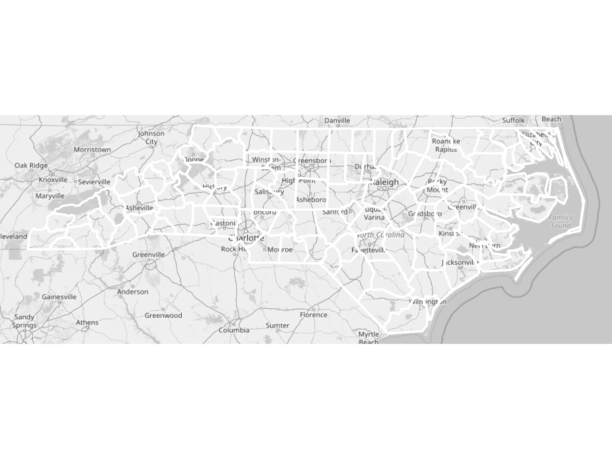
Grayscale basemap
This is perfect for: - Academic publications - Print media - When you want data to stand out - Creating vintage-style maps
2. Saturation
Control the intensity of colors:
ggplot() +
add_basemap(nc, saturation = 1) +
geom_sf(data = nc, fill = NA, color = "red") +
ggtitle("Saturation = 1 (default)")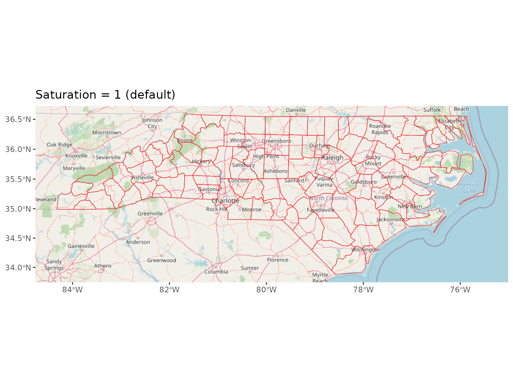
Normal saturation
ggplot() +
add_basemap(nc, saturation = 0.5) +
geom_sf(data = nc, fill = NA, color = "red") +
ggtitle("Saturation = 0.5")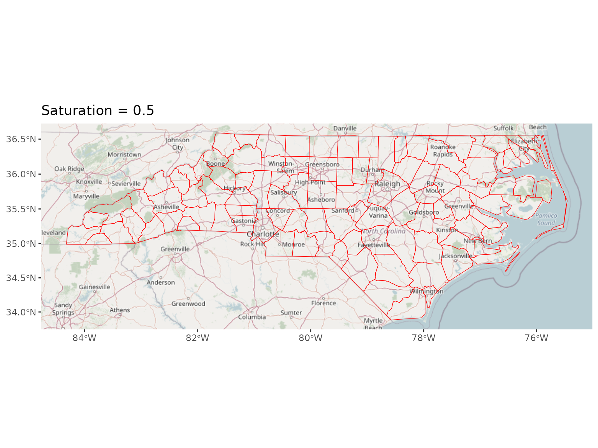
Reduced saturation
3. Brightness
Adjust the overall lightness:
# Darker (-30%)
ggplot() +
add_basemap(nc, brightness = 0.7) +
geom_sf(data = nc, fill = NA, color = "yellow") +
ggtitle("Brightness = 0.7 (darker)")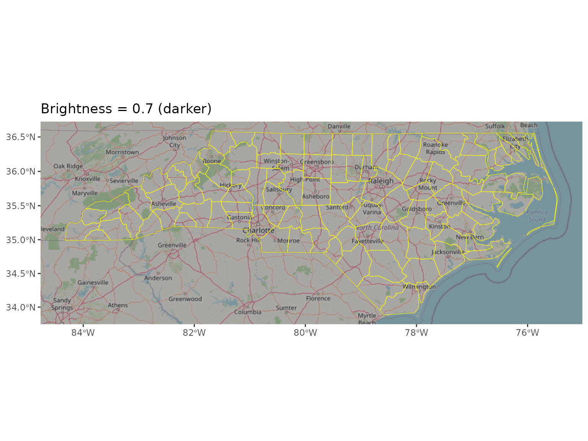
Adjusted brightness
4. Contrast
Enhance or reduce the difference between light and dark areas:
ggplot() +
add_basemap(nc, contrast = 1.5) +
geom_sf(data = nc, fill = NA, color = "red") +
ggtitle("Contrast = 1.5 (punchy)")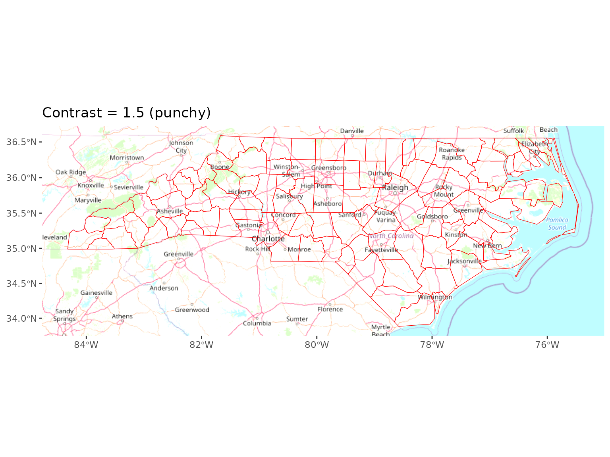
High contrast
5. Gamma Correction
Adjust midtones without affecting blacks and whites:
ggplot() +
add_basemap(nc, gamma = 0.8) +
geom_sf(data = nc, fill = NA, color = "red") +
ggtitle("Gamma = 0.8 (brighter midtones)")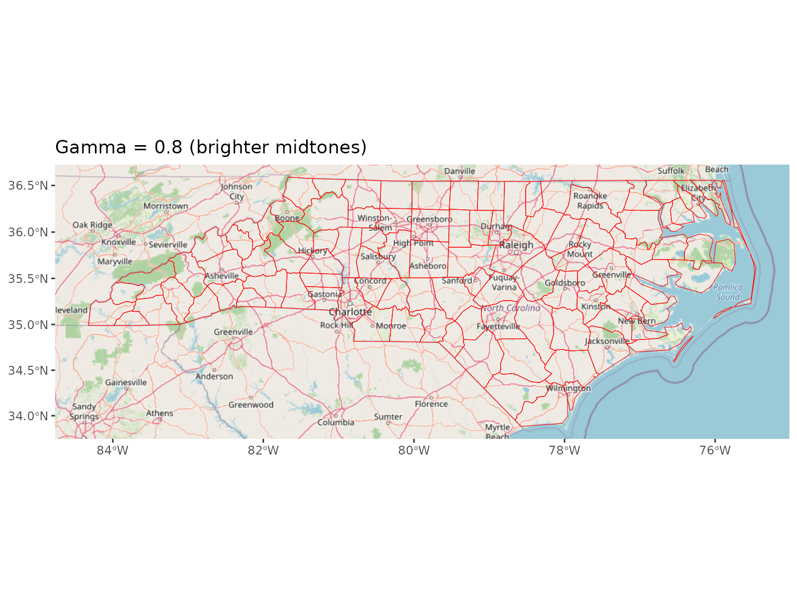
Gamma correction
Combining Transformations
The real power comes from combining multiple transformations:
Vintage/Sepia Effect
ggplot() +
add_basemap(nc,
saturation = 0.3,
brightness = 0.85,
contrast = 1.2,
gamma = 1.1) +
geom_sf(data = nc, fill = NA, color = "brown", linewidth = 0.8) +
theme_void() +
ggtitle("Vintage Style")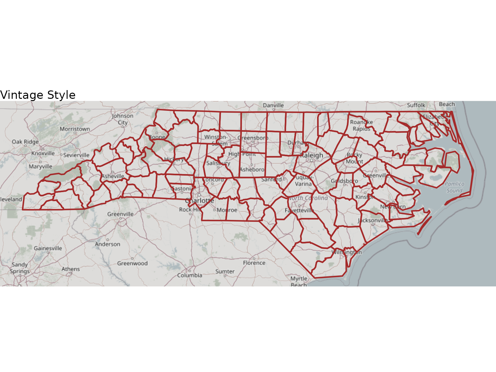
Vintage style map
High-Contrast Monochrome
ggplot() +
add_basemap(nc,
grayscale = TRUE,
brightness = 1.1,
contrast = 1.6) +
geom_sf(data = nc, fill = NA, color = "black") +
theme_void() +
ggtitle("High-Contrast Monochrome")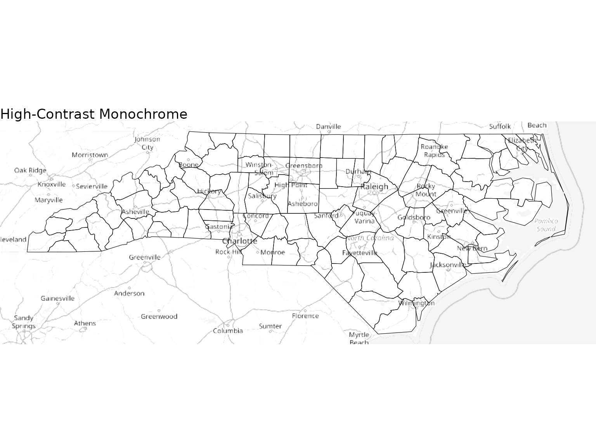
High contrast monochrome
Soft/Faded Look
ggplot() +
add_basemap(nc,
saturation = 0.6,
brightness = 1.1,
contrast = 0.8,
gamma = 0.9) +
geom_sf(data = nc, fill = NA, color = "darkblue") +
theme_void() +
ggtitle("Soft/Faded Look")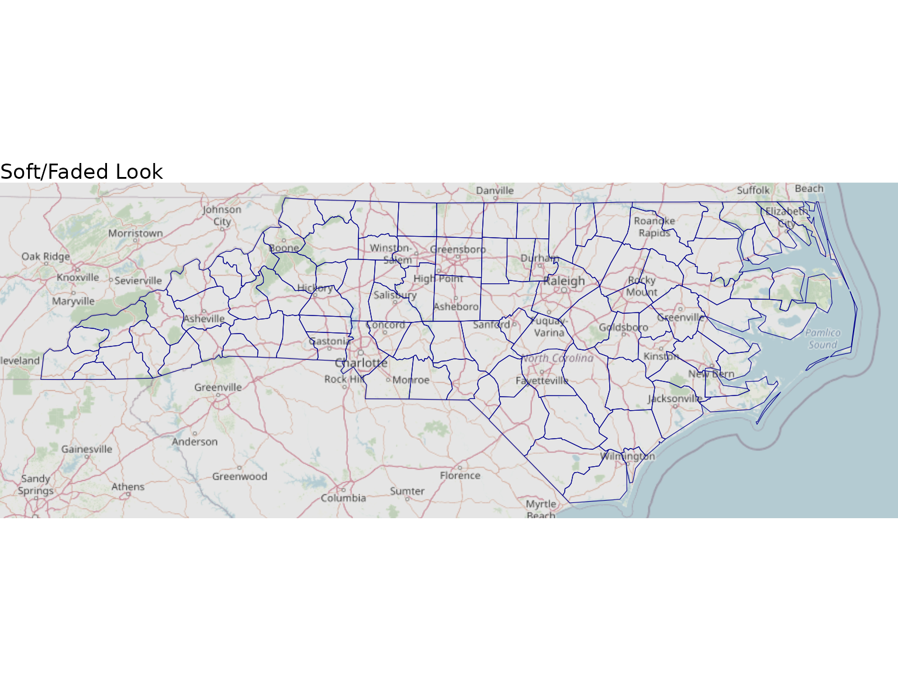
Soft faded look
Data-Friendly Background
When you want your data to be the star:
ggplot() +
add_basemap(nc,
saturation = 0.2,
brightness = 1.05,
contrast = 0.9) +
geom_sf(data = nc,
aes(fill = AREA),
color = "white",
linewidth = 0.3) +
scale_fill_viridis_c() +
theme_void() +
ggtitle("Data-Friendly Background")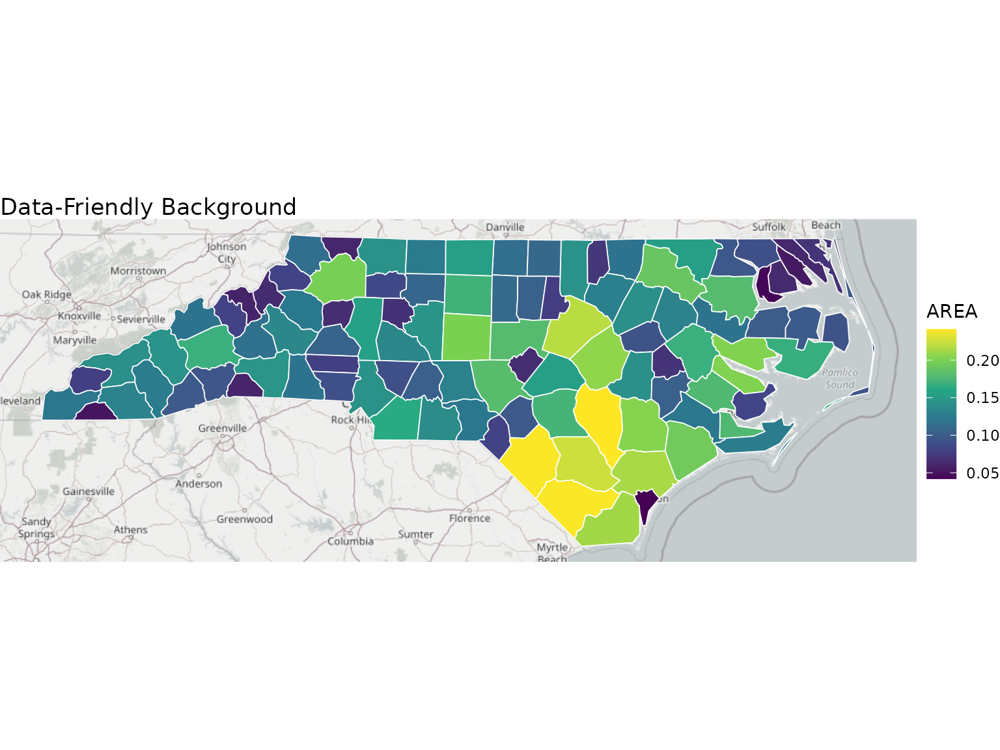
Data-friendly background
Complete Reference Table
| Parameter | Default | Range | Effect |
|---|---|---|---|
grayscale |
FALSE | TRUE/FALSE | Convert to B&W |
saturation |
1 | 0 to Inf | Color intensity (0=grayscale) |
brightness |
1 | 0 to Inf | Overall lightness |
contrast |
1 | 0 to Inf | Difference between light/dark |
gamma |
1 | 0 to Inf | Midtones adjustment |
Transformation Order
Transformations are applied in this order:
- Gamma (non-linear correction)
- Brightness (linear multiplication)
- Contrast (centered on 0.5)
- Saturation (color adjustment)
- Grayscale (final conversion if TRUE)
This order ensures the best visual results.
Best Practices
For Print Publications
ggplot() +
add_basemap(nc,
grayscale = TRUE,
contrast = 1.2,
brightness = 0.95) +
geom_sf(data = nc)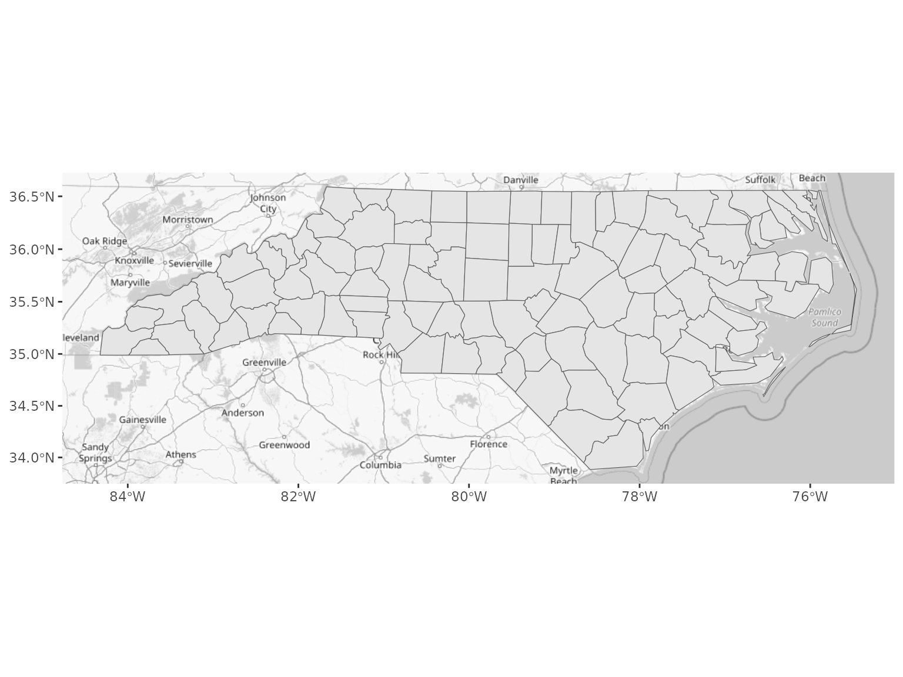
Print-ready grayscale
For Web/Digital Display
ggplot() +
add_basemap(nc,
saturation = 1.1,
brightness = 1.05,
contrast = 1.0) +
geom_sf(data = nc)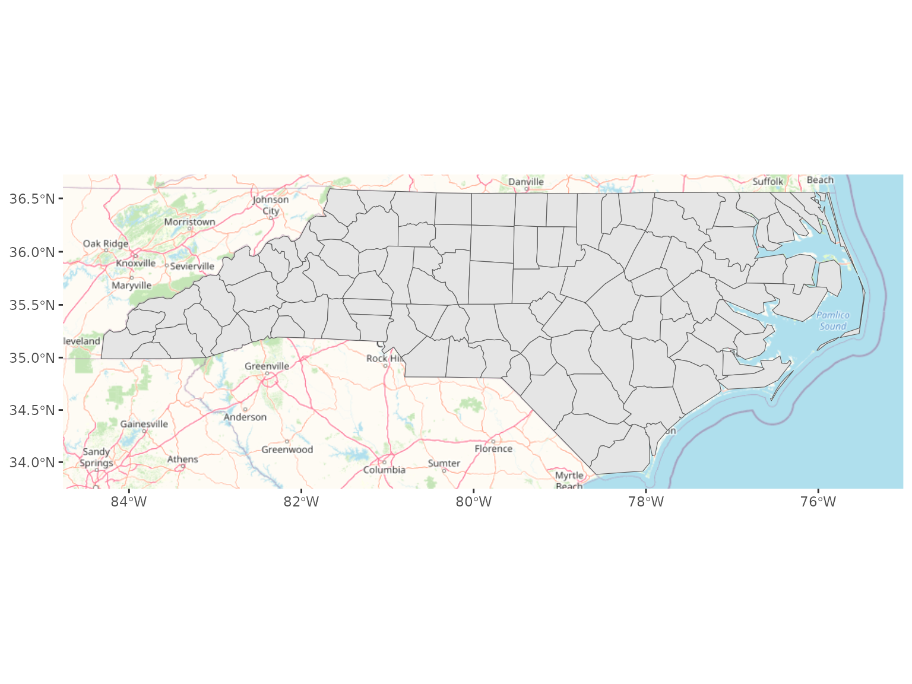
Web-optimized colors
Common Mistakes to Avoid
- Don’t overdo it: Extreme values (>2 or <0.3) usually look bad
- Check your data: Make sure your data colors work with the basemap
- Test on different screens: What looks good on your monitor might not on others
Next Steps
- Read about Map Rotation to create angled perspectives
- Check the FAQ for common questions